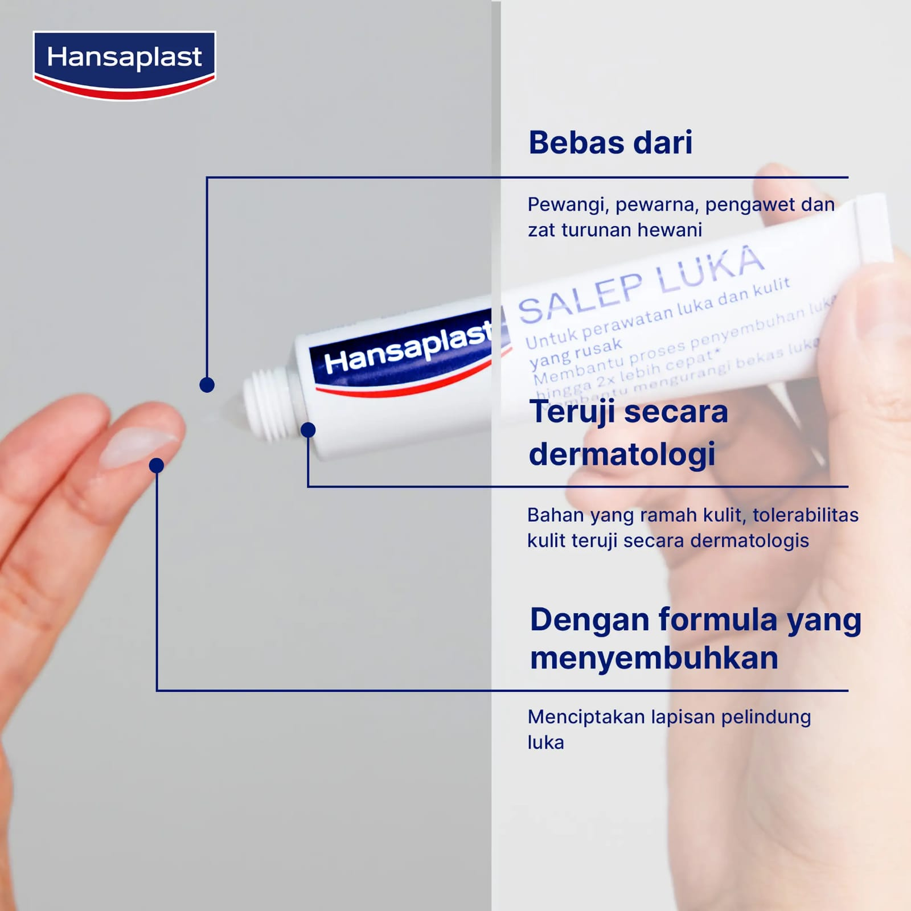
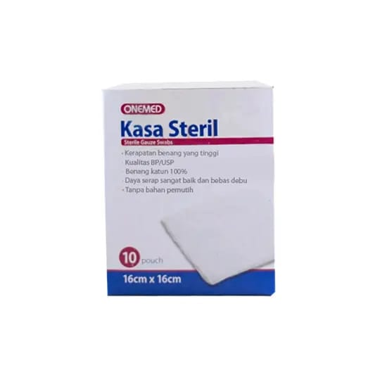

Isi :
Luka :
Cara mengobati luka yang benar.
Luka adalah cedera yang muncul dengan cepat dan menyebabkan terbukanya kulit.

Luka Memar
Adalah luka dalam
Jenis Luka :
- Luka Lecet :
- Adalah Luka Yang terjadi saat Terjatuh,kesandung,keseret

- Luka Sayat :
- Luka yang Terjadi Karena Sayatan Pisau,Guntung,Pecahan Kaca

- Luka Bakar :
- Luka Yang Terkena Api atau benda yang sangat panas

Nah, Sebelum Mengobati Luka,Diberi Tahukan melakukan Lakukan Hal Berikut!
- Cuci Tangan Sampai Bersih
- Pakai Sarung Tangan Jika Perlu
- Pastikan Tangan Bersih
Pertolongan Pertama Luka Lecet dan Luka Sayat
- Tekan Kasa Steril agar tidak Terjadi Pendarahan
- bersihkan Luka sampai bersih dengan anti septic
- Tempelkan Plester yang sesuai Ukuran Luka
- Oleskan saleb khusus luka lecet/sayat
Pertolongan Pertama Luka Bakar
- Lepaskan Aksesoris
- Dinginkan dan cuci dengan air mengalir min 5 menit
- Bersihkan dengan Anti septic
- Oleskan Saleb Luka Bakar
- Kasih perban,plester khusus luka bakar
Jadi Itu adalah Sebuah Pertolongan Pertama Saat terkena Luka Lecet,Sayat,Dan Luka Bakar!
Pergi Kerumah Sakit jika Terjadi
-
Ada Nanah
Cairan kental warna hijau,putih/kuning dari tubuh
- Luka pada Mata atau alat Kelamin
- Pendarahan parah
- Luka Yang tidak Sembuh²

Jenis Jenis alat Untuk mengobati Luka :
-
Anti Septic
Obat untuk membunuh kuman di luka.
-
Plester
Perekat untuk melindungi luka.
-
Saleb Luka
Obat oles untuk menyembuhkan luka.
-
Kasa steril
Kain bersih untuk menutup luka.
- DLL



